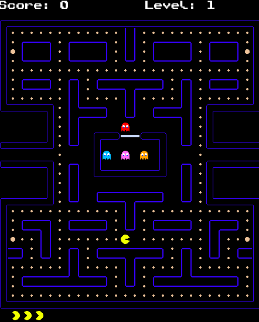
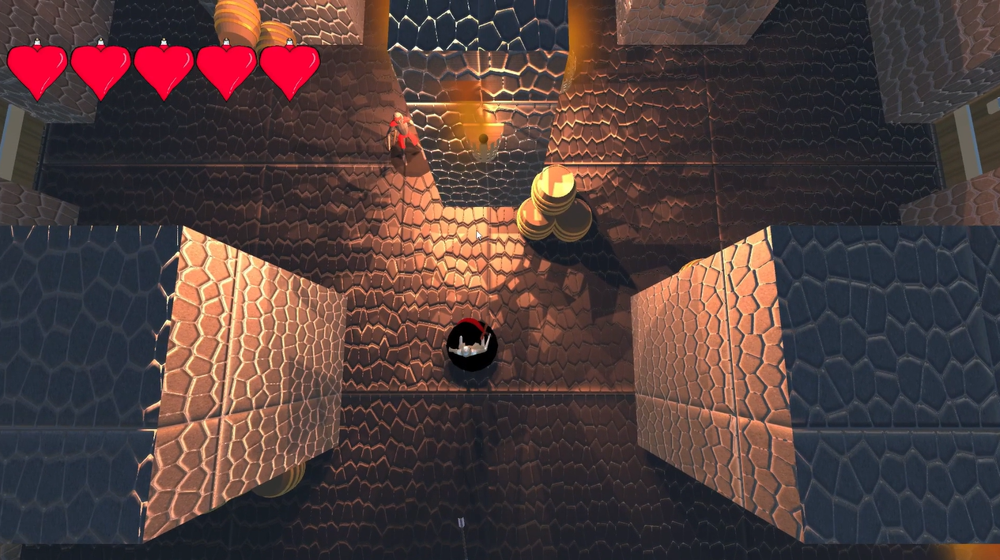
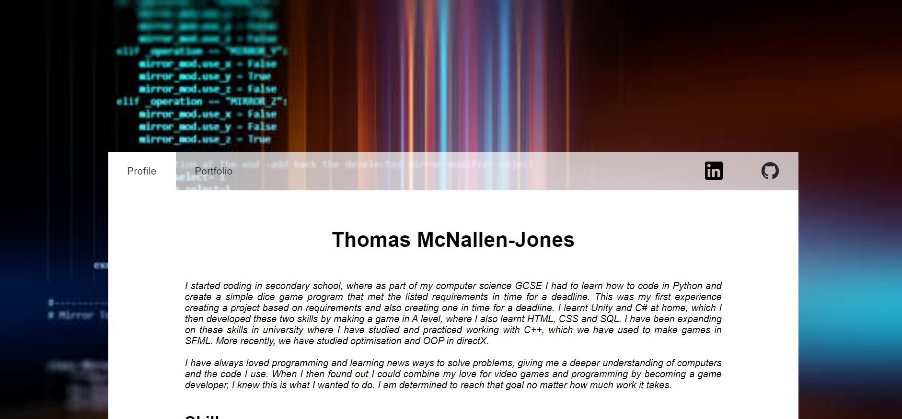
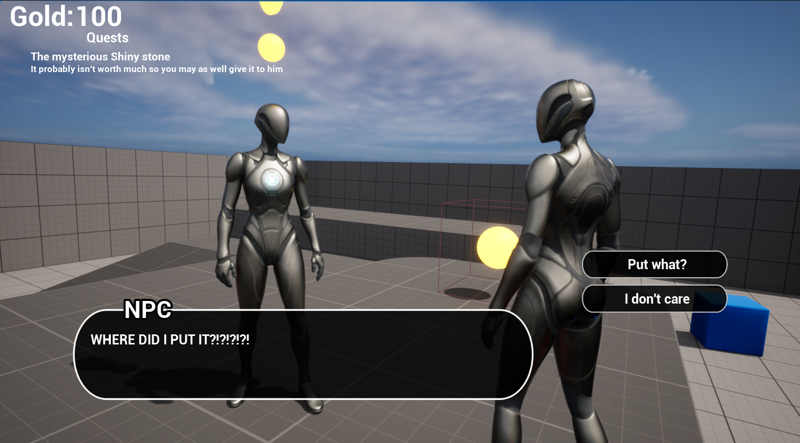
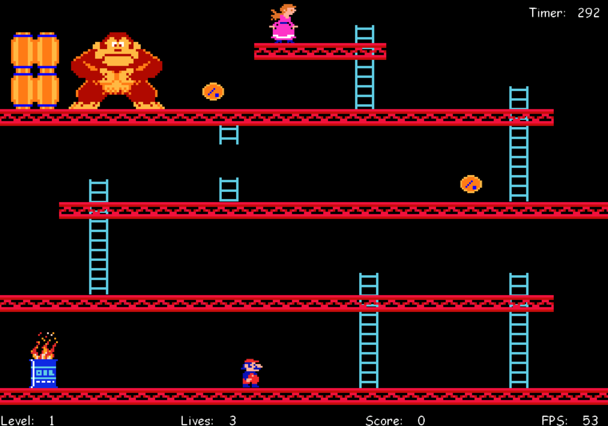

My Projects
This is a page displaying some of the projects I have created! Click the images below to learn more
about the project. You can find tags for what tools and languages I used, a brief description of the
project, how long I had to make it and what I learnt/improved from it.
-
February 22nd, 2023
Pac-Man C++ Project

This is a project I made in the first year at university. It displays my skills in C++ using SFML to
create a 2D game. It was a project was made with requirements that I had to design. I was given a 15 week
a deadline to complete. I created documentation for the game design, technical design and then created multipe versions
using github.
-
March 29th, 2023
Unity Group Project

This is a group project that was made with 6 people (including me). We had 2 designers, 2 programmers
and 2 artists in our group. In order to collaborate on this project, we managed our workflow with a
trello board, used github for version control and to allow us all to work on different sections. Finally,
we used discord to regularly update each other on our progress or communicate any difficulties that we ran into.
-
Present Day, 2023
This website

This is a wesbite I started in september 2023. I am using this as my portfolio to show off my best work. This website
has some of my best work, to showcase my skills as a progreammer. I will be working on this as I progress through
my career. From adding new projects, to adding new features that increase usability so that the site is as
appealing as possible!
-
November 13th, 2023
Unreal rpg demo

This is a project I made in unreal to test my abilities at making features commonly found in an rpg. While these features
are commonly used in rpg's, they are also used in many other genres and AAA games. So I wanted to show my ability to create
such features. The date listed above is the last time I worked on it but I plan to work on it more as time goes on, so that
it can become more fully fleshed out and I can test my abilities on more features.
-
January 11th, 2024
Donkey Kong DirectX project

This is a project I made in directX using c++ to test and show my foundational knowledge of C++ and game development. The game is made in 2D,
however I chose to implement 3D elements for the menus to show off some 3D graphic knowledge and understanding. The date listed above is the last time I worked on it
but I plan to add LUA support by April.
-
Ongoing, 2024
Unreal group project

This is a project I made in unreal with a group (similar to the unity one) to test and demonstrate my teamworking abilities.
With the help of github version control, trello board scheduling and regular meetings and discord communication. We were able
to make a basic survival game. The game itself has a lot of room to grow but we created it in a month with the intention of making
a prototype of the game. Thanks to the systems we put in place, expanding on this game would be quite easy with time. However, there
are no current plans to do so. (This project is in the final stages of prototype development at the time of writing this so no images
or videos can be shared)